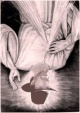

De: La Frikipedia, la enciclopedia extremadamente seria.
De: La Frikipedia, la enciclopedia extremadamente seria. De: La Frikipedia, la enciclopedia extremadamente seria.
|  | NÓICNETA .otneimadnam ovatcO u/y odnugeS le artnoc atneta y sairotarig sadatap noc ralgerra edeup es odnum etse ne odot euq asneip rotua uS .aduga sitirronkcuhC ed acep olucítra etsE |
| De la serie idiomas del mundo: | |||
| Enrevesadés | |||
| |||
| Familia | oeporueodni | ||
| Número de hablantes | socop | ||
| Hablado en | arreit al | ||
| Hablado por | recah euq rojem adan nis etneg | ||
| Artificial o Natural | laicifitra | ||
| Nivel de frikismo | omisídavele | ||
| Dificultad | amertxe | ||
| Truqui para dominarlo | ojepse nu | ||
| Máximo exponente | sirroN kcuhC | ||
| Ejemplo de uso | .añatsac anu se olucítra etsE | ||
.aniram al ne etatsíla :adreucer Y
ɐpıɔɹoʇ uɐʇ ɐzǝqɐɔ ɐ1 uoɔ ǝʌ ǝʇ uǝınb1ɐ ıs sɐ11odı1ıb un oɯoɔ ɹɐpǝnb ǝɔɐɥ ǝʇ ʎ 'o11ǝnɔ ǝp sɐɯǝ1qoɹd ɐǝɹɹɐɔɐ 'oʇɔǝɹɹoɔuı sǝ ǝnbunɐ 'ɐɹǝuɐɯ ɐʇsǝ ǝp sǝpɐsǝʌǝɹuǝ 1ǝ ǝqıɹɔsǝ uǝınb ʎɐɥ uéıqɯɐʇ
.orip eM .óbaca es ¿séver la ribircse omoc ollicnes nat ogla rednetne edeup es on omóC? .odot racilpxe euq yah ol sO .atleuv adad orep ,anretam augnel ut ed al euq amsim al erpmeis sE
.sotsugsid rative arap augnel atse ralbah a sodañesne nos oiretsigam ed arerrac al ne euq ay ,nebas ol ísa núa .odnalbah nátse euq ed napes on seroseforp sol euq arap oercer le ne nalbah ol euq soirc socop sonu a ecuder es osu uS
.adan ed raretne a sav et on orep recah edeup eS .ojaba a abirra ed y ahcered a adreiuqzi eD
.otnot seceraP .adreiuqzi a ahcered ed y abirra ojaba eD .aroha odneicah sátse ol omoc y laT
.aidem dade al etnarud sotsiv lam nat nareuf sorom sol euq le rop ovitom le se etsE .adíesop anosrep anu rop odamot res ed ogseir le erroc es euq ay ,sédaseverne ralbah eidan a adneimocer es oN .olucítra etse ne otercnoc ne ,aires etnemadamertxe aidepolcicne atse ne o sodíesop ,satsinatas ,sevarg socixélsid ed senoicaicosa ne ,ebará síap reiuqlauc ne asu es sédaseverne lE
.séver la ohcid nítal la sám aícerap es oipicnirp la euqrop ,ohcum odanoiculove ah euqnua ,.c.a IVX olgis le ne óigruS .recah euq rojem adan neneit on euq etneg rop ,amoidi nu se sédaseverne lE
Autor(es):